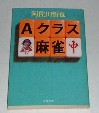

入難度（入手の困難度）、雀学度（のレベル）、影響度（雀界に与えた衝撃、影響の度合い）を３段階で評価した。ＬはLow（低）、MはMiddle(中)、HはHigh（高）の略である。
ただし入手度のみ、Ｈ評価の上にＳ評価をつけた。SはSuper High(超高)の略、すなわち入手はほとんど不可能というレベル。
＊もとよりセレクトは、σ(-_-)の独断と偏見による。
|
| １ |
阿佐田哲也 |
麻雀の推理
（「Ａクラス麻雀」と改題） |
双葉社(S44.2.10) |
入難度 L
雀学度 L
影響度 H
プレーヤーの心理面を鋭く分析
|
 |
| . |
| ２ |
天野晴夫 |
リーチ麻雀論・改革派 |
南雲書店(H2.3.6) |
入難度 L
雀学度 L
影響度 Ｈ
戦術論に横行するツキ・流れ論に真っ向から対決したした正論
|
 |
| . |
| ３ |
川崎備寛 |
麻雀の打ち方 |
大泉書店(S24/6) |
入難度 L
雀学度 L
影響度 H
戦後最初のベストセラー |
|
| .. |
| ４ |
五味康祐 |
五味麻雀教室 |
光文堂 |
入難度 L
雀学度 L
影響度 H
ユニークで斬新な戦術論
|
|
| . |
| ５ |
日本麻雀連盟 |
麻雀大講座(全５巻） |
春陽堂(S5/7) |
入難度 Ｈ
雀学度 H
影響度 M
昭和初期の日雀連が総力を挙げて作った入門＆戦術書シリーズ。 |
|
| . |
| ６ |
沼崎雀歩 |
牌姿難問 |
自費出版(S6) |
入難度 S
雀学度 L
影響度 Ｌ
伝説のプレーヤーが著した唯一の戦術分析書
|
|
| . |
| ７ |
畑正憲 |
精密麻雀 |
実業之日本社(S54.12.25) |
入難度 L
雀学度 L
影響度 M
ここまで分析できるのか.... |
|
| . |
| ８ |
古川凱章 |
パーフェクト麻雀 |
竹書房(S52.4.10) |
入難度 L
雀学度 L
影響度 M
じっくりとした体制論
|
|
| .. |
| ９ |
村石利夫 |
麻雀実力テスト |
池田書店(S41.5.20) |
入難度 M
雀学度 L
影響度 M
単なる手牌読み問題集に思えるが、すごく斬新。
|
|
| .. |
| 10 |
天野大三 |
リーチ麻雀シリーズ |
日東書院(S36.4.5) |
入難度 M
雀学度 H
影響度 M
日本牌棋院が総力を挙げて作った入門＆戦術書シリーズ
|
|
| . |
| 番外 |
古川凱章 |
麻雀仕掛け打ち |
桃園書房 |
入難度 L
雀学度 L
影響度 M
脂が乗った戦術書
|
|